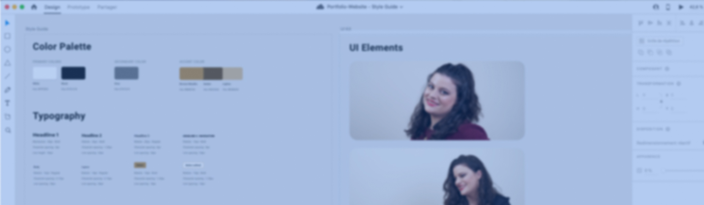
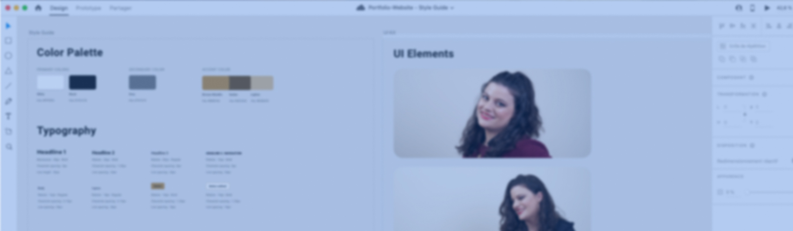

Portfolio-Website
A Front-end learning project resulting in an online Portfolio.
My Role
I was the sole UX/UI Designer and Front-end Developper.
Tools I used

Atom

GitHub

Quicktime
Overview
The Context
Nov 2021. During my UX Design training with CareerFoundry, I chose the Frontend specialization.
The Problem
To become a good UX Designer, I need a way to learn what the role of a developper involves in order to become a better, more efficient and time-saver team player.
The Objective
With this project, I will gain insight about which information developpers would need during handovers while developping my own Portfolio-Website and learning the basics of HTML5, CSS3 and JavaScript.
What was my design process?
I followed the Double Diamond design strategy and went through the Develop and Deliver steps before Iterating.
1. DEVELOP
Before starting to code my Portfolio-Website, I made some preparations.
- I learnt about the text editor Atom and downloaded some pluggins.
- I created a project folder and gathered inside all the UI elements that will be needed (PDFs, JPEGs, PNGs, SVGs).
- I studied the provided Mid-fi wireframes for the Home and About pages and determined the color palette as well as the typography.
Then, I started to develop my Portfolio-Website while learning.
- I built the core of my website while learning about HTML.
- I styled my website with fonts, colors and layouts while learning about CSS.
- I added some interactivity to my website while learning the basics of JavaScript.
HTML page

With CSS

2. DELIVER
Before testing my Portfolio-Website...
- I created a French version of all my HTML files and added language selectors.
- I used a color checker to make sure colors used are compliant to the AA ratio.
- I verified through a cross-browsing test if the website was working properly on all standard browsers and different electronic devices.

I carried out a usability test to assess the intuitiveness of my website.
- I moderated 5 in-person usability tests.
- I analyzed the answers via affinity maps and rainbow spreadsheet.
- I wrote a test report including requirements for future iterations.


Usability tests main takeaways
- Website is clean and easy to navigate through.
- Website’s visual design is a bit bland and lacks “pep”.
- Small problem with website’s code : a picture not showing properly on the French Home page.
3. ITERATE
Following the test report, I iterated my website’s navigation experience and visual design.
- I added a “PROJECTS” tab in the navigation bar for further intuitiveness.
- I modified the design system, changed some photos and pictures.
- I fixed the code for the missing picture and added interactivities via JavaScript for more fluidity (smooth scroll, hidding-showing navigation bar...).
Homepage: before

Homepage: after

 

New Design System
- New color palette and font.
- New logo.
- Changed for more recent photos of me and less cluttered pictures on Home page.
OUTCOMES >> NEXT STEPS
I successfully managed to build my own Portfolio-Website which I’ll be using during my job search!
- I learnt how to use HTML5, CSS3 and JavaScript.
>> I want to keep on improving my Portfolio's design so I will continue learning to improve my knowledge and skills in this area. - I gained new perspectives on how to work alongside developpers.
>> I will find a team-project to work on to further understand how to best collaborate. - I discovered new tools : Atom & Github.